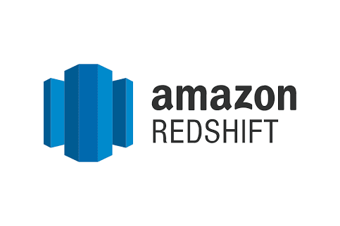

This project involved an in-depth analysis of music store sales data using SQL. The goal was to identify trends, top-selling genres, and customer behavior to provide actionable insights for the business. Advanced SQL queries, including joins, aggregations, and window functions, were utilized to extract meaningful information from the database.

Developed and managed a comprehensive dbt project leveraging advanced SQL transformations to build a structured Airbnb data model, progressing from raw staging to production-ready dimensional and fact marts, thereby supporting data-driven decision-making and influencing strategic directions. This project facilitated collaboration with engineers to enhance data processes and ensure a high level of accuracy and data integrity.

Led a Looker project supporting Finance and Operations teams that increased monthly sales targets by 25% by designing a sales forecast dashboard to rapidly inform Sales and Go-To-Market teams, emphasizing the go-to-market strategy.

This project focused on exploring a COVID-19 dataset using SQL Server. The primary objective was to uncover patterns and insights related to the pandemic's impact. Techniques such as data cleaning, transformation, and exploratory data analysis were employed to understand infection rates, mortality rates, and vaccination progress across different regions.

This collection showcases various Tableau dashboards created to visualize complex datasets. These dashboards cover diverse areas, including sales performance, customer segmentation, and operational metrics. The projects demonstrate proficiency in creating interactive and insightful visualizations that facilitate data-driven decision-making.

This project involved exploring data from a pet supplies e-commerce store using Python, primarily with the Pandas library. The focus was on understanding customer purchasing patterns, product popularity, and sales trends. Data cleaning, manipulation, and visualization techniques were used to derive insights that could inform inventory management and marketing strategies.
This project focused on analyzing Hacker News posts using Python. The objective was to determine trends in post popularity, such as the optimal time to post and the types of titles that attract the most engagement. The project involved working with APIs, data cleaning, and performing statistical analysis to draw meaningful conclusions.

This project involved designing and implementing a relational database for a music streaming app using PostgreSQL. The focus was on creating an efficient and scalable data model by defining tables, relationships, and constraints. The project included developing an ETL pipeline to populate the database, enabling analytics on user activity, song plays, and artist information.

This project focused on designing and implementing a data warehouse using Amazon Redshift. The goal was to create a centralized repository for large volumes of data from various sources. Key aspects included schema design, ETL processes to load data into Redshift, and optimizing query performance for analytical reporting and business intelligence.